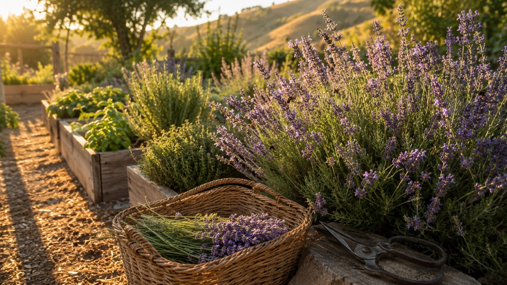
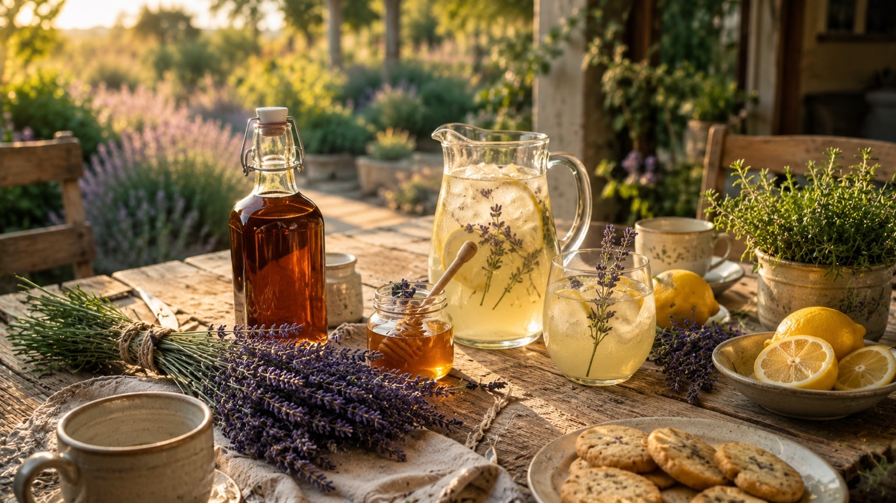
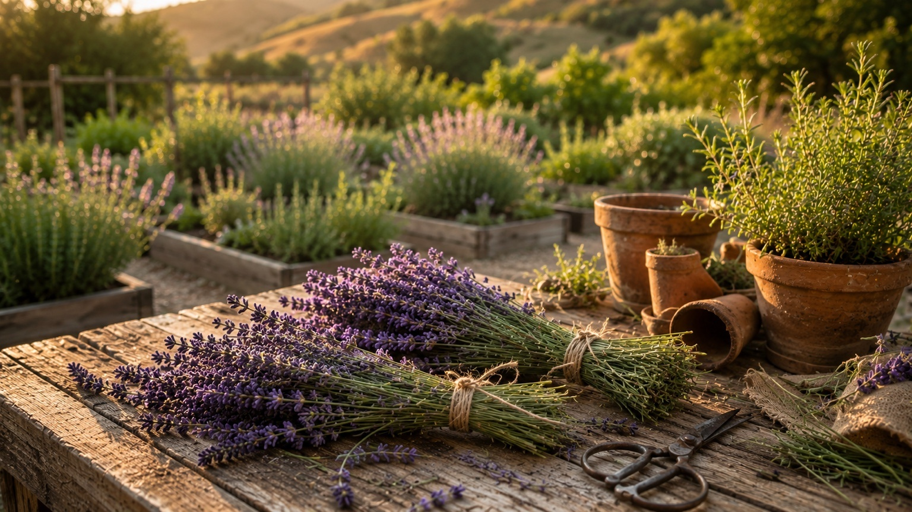
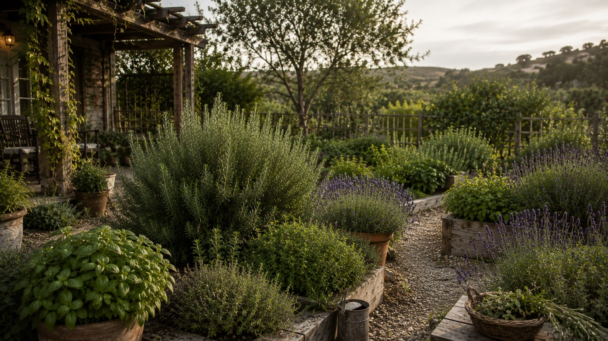
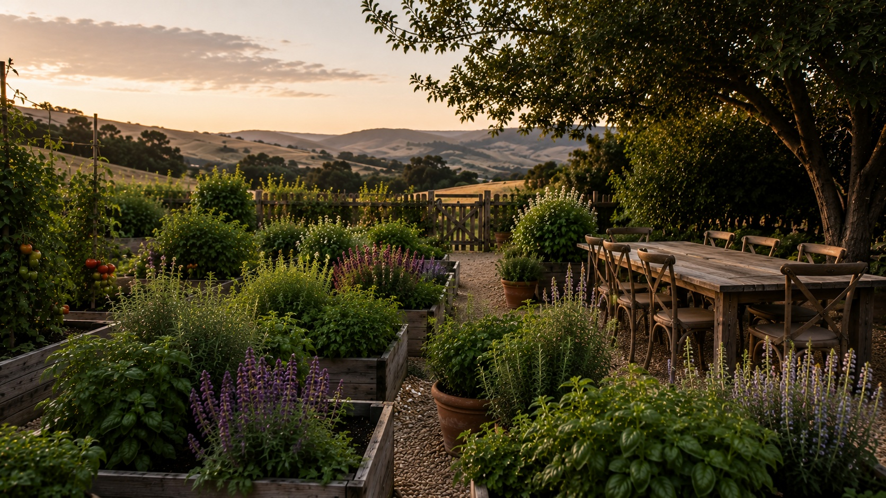
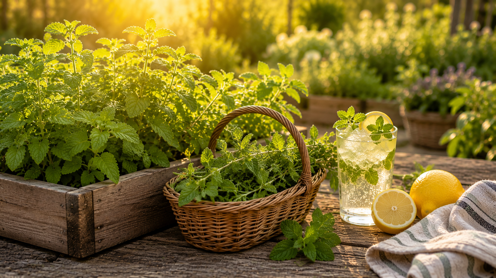
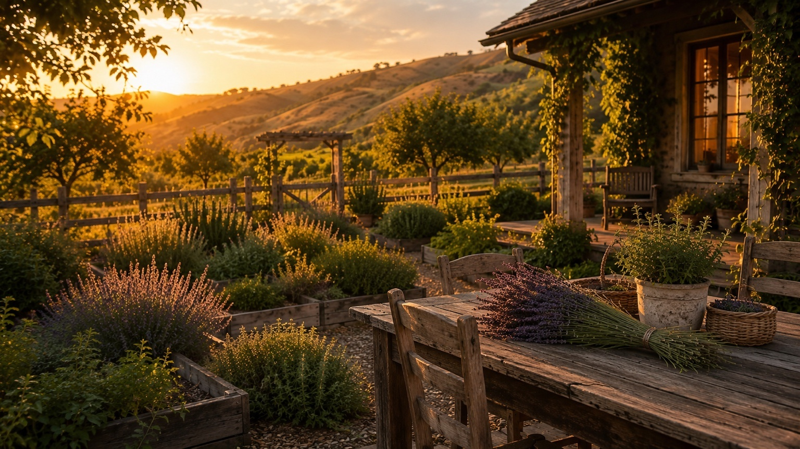

Lavender Harvest Hub
Grow, Harvest & Use Lavender in Season
When bundles begin drying in the kitchen, everyone in our house knows summer has arrived. Lavender brings beauty to the home and gentle moments around the table.
Explore Lavender
The Lavender Ecosystem
Lavender begins in the garden, but its peace carries into the kitchen, the glass, the linen closet, and the table. Use these pages together as the full Lavender path.
🌿 Lavender Guide
Grow lavender for quiet summer beauty, pollinators, fragrant bundles, and garden-to-glass recipes.
Explore the Guide → Save the Harvest✂️ Harvest & Preserve Lavender
Learn when to cut lavender, how to dry it well, and how to hold onto summer’s calm for later.
Save the Harvest → For the Glass🍯 Lavender Simple Syrup
Make a gentle floral syrup for lemonade, tea, cocktails, mocktails, and quiet summer gatherings.
Make the Syrup → Recipes🍸 Seasonal Recipes
Browse cocktails, mocktails, syrups, preserves, and garden-inspired drinks from the From Bed to Bar kitchen.
Browse Recipes →Summer favorite
Why We Grow Lavender
Lavender is not the loudest plant in the garden, and perhaps that is part of why we love it. It does not rush to fill a basket the way basil does, or keep showing up all year like rosemary. It waits quietly, asks for patience, and then offers something the home needs just as much as food: peace.
Then, almost quietly, it changes the whole feeling of summer. The bees arrive first. The stems color up. The air near the bed turns sweet and clean. A small harvest becomes lemonade for the patio, tea after dinner, syrup for guests, sachets for linen drawers, and simple gifts from the garden.
Lavender reminds us that not everything we grow has to be measured by abundance. Some plants are worth growing because they make home feel more peaceful, more fragrant, and more beautiful. Beauty matters. Home matters. Family matters. Rooted in the garden. Raised around the table.
Most of the year, lavender waits quietly. When the flowers finally open, the whole bed feels softer, slower, and ready to be carried indoors.
Visit the garden →Full sun, sharp drainage, and less water than you think. Lavender rewards restraint more than fussing.
Grow it well →A small harvest can become syrup, tea, gifts, linen sachets, and the kind of quiet home rituals that keep summer close.
Make syrup →Lavender belongs in the kind of moments that make people linger — lemonade, tea, dessert, conversation, and the last warm light of the evening.
Mix a spritz →
From our garden
The bees always seem to know first.
Lavender bloom season has a way of arriving softly. One morning the stems are still tight and silver-green, and then suddenly the bed is full of color, fragrance, and movement. Before breakfast, the bees are already working through the flowers as if they have been waiting all year.
We try to harvest before the heat settles in, when the fragrance is clean and the oils are still bright. The best stems are cut just as the first buds begin to open — not when the whole flower spike is finished, but in that brief in-between moment when the plant is holding its strongest scent and the morning still feels peaceful.
That timing makes lavender feel different from the everyday herbs. You do not wander out and grab it casually the way you might with mint or basil. You watch it. You wait. And when the window opens, you gather what you can — not only for drinks, but for the kitchen, the table, the pantry, and the small comforts that make a house feel cared for.
— From the lavender bed into the home
Around the table
Lavender brings a little peace to the family table.
A bottle of lavender syrup in the refrigerator changes the rhythm of the kitchen. Lemonade feels more intentional. Tea after dinner feels softer. Sparkling water feels like a treat. A simple dessert for guests suddenly carries the fragrance of the garden.
But lavender is not only for the glass. It belongs in the same summer moments as sliced lemons, honey jars, iced tea, cookies for friends, quiet patio dinners, and a table that still has garden clippings on it. It brings freshness and calm without asking to be the center of attention — the kind of beauty that supports hospitality, conversation, and family life.

A small bottle of lavender syrup carries the bloom season into lemonade, tea, sparkling water, cocktails, mocktails, and family evenings gathered outside.
Make the syrup →Lemon, bubbles, and a careful touch of lavender make one of the gentlest warm-weather drinks to serve when people linger after dinner.
Mix the spritz →Cut at the right moment, dry in small bundles, and save the buds for syrup, tea, linen sachets, simple gifts, and quiet winter evenings at home.
Save the harvest →Lavender at a glance
Beautiful, useful, and happiest when left room to breathe.
Lavender is not difficult once you understand its temperament. It wants sun on its shoulders, air around its stems, and soil that drains quickly. In the garden, as in the glass and the home, lavender rewards restraint. Too much water, too much richness, or too heavy a hand can overwhelm what makes it beautiful.

Choose English lavender.
For syrups, drinks, and kitchen use, English lavender is the most graceful choice. Hidcote is compact and fragrant; Vera is classic, slightly taller, and beautifully aromatic.
Plant where it can dry out.
Raised beds, gravelly edges, terracotta pots, and sandy soil all suit lavender better than heavy ground. Wet roots are the quickest way to lose a plant.
Harvest with restraint.
Cut stems in the morning and never take the plant too far back. Lavender needs green growth left behind, especially as older plants begin to turn woody at the base.
Use less than you think.
Lavender should whisper in a drink and in the kitchen. A heavy hand can turn floral into soapy quickly, so steep gently, taste often, and let lemon, honey, tea, or bubbles carry the rest.
Save the harvest
A dried bundle in January still remembers June.
Lavender is one of the few herbs that becomes more useful after drying. The flowers hold their shape, the fragrance concentrates, and the season lingers long after the blooms have faded from the garden. A bundle hanging in the kitchen in winter can still carry the memory of a summer morning.
Tie 8 to 10 stems together and hang them somewhere warm, shaded, and airy. Small bundles dry more evenly, keep their color better, and bring a quiet beauty to the kitchen while they wait for the pantry jar.
Best for: pantry jars, tea, sachets, gifts, and syrup
A short steep is enough. Lavender syrup should taste floral and clean, never perfume-heavy. Lemon, honey, tea, and sparkling water are its natural companions.
Best for: lemonade, tea, spritzes, mocktails
Dried lavender makes simple gifts feel thoughtful — a small jar of buds, a bottle of syrup, a sachet for linens, or a bundle tied with twine for someone who loves the garden as much as the table.
Best for: neighbors, family, hostess gifts, and home comforts
Lavender is strongest when the buds are just beginning to open. That moment is short, so watch the plant closely once the color starts to show, and harvest with the home in mind — some for the table, some for tea, some for gifts, and some simply for beauty.
Continue the garden
What to grow next
Lavender brings quiet beauty into the home, and it feels even richer beside herbs that offer different kinds of care — steady rosemary for meals and tradition, generous basil for summer abundance, and gentle lemon balm for tea, lemonade, and calm.

A steady, year-round companion for roasted meals, syrups, bourbon drinks, and evergreen structure in the garden.
Read the guide
The herb of summer abundance — pesto, lemonade, Caprese salad, family dinners, and bright garden drinks.
Read the guide
Gentle, citrusy, and calming — a natural next step for teas, lemonades, mocktails, and quiet drinks from the garden.
Read the guide
Questions answered
Lavender Growing FAQ
The lavender questions that come up most often — answered plainly, with the garden, the kitchen, and the home in mind.
Lavender is straightforward once you understand its two non-negotiables: full sun and excellent drainage. Give it those two things and it becomes wonderfully low-maintenance — drought-tolerant, rarely bothered by pests, and steady for years. The most common problem is wet soil, which causes root rot even in otherwise healthy plants. Get the drainage right and lavender will reward you season after season.
English lavender (Lavandula angustifolia) is the best choice for cocktail and kitchen use. Hidcote is a favorite — compact, deeply fragrant, and reliable in most climates. Vera is another excellent option with slightly larger flower spikes and a classic lavender scent. French lavender (Lavandula dentata) and Spanish lavender (Lavandula stoechas) are beautiful in the garden, but their stronger camphor note can overpower drinks.
Yes. A container can be one of the best ways to grow lavender in wetter climates because you control the drainage completely. Use a terracotta pot, a gritty mix with extra perlite, and the sunniest position available. Repot every 2 to 3 years as the plant matures, and never let it sit in a saucer of water.
English lavender typically blooms from late June through July in many temperate gardens, though the exact timing depends on region and variety. Hidcote often blooms a little earlier. Some varieties will produce a second, lighter flush in late summer if you cut back after the first bloom. The window for peak harvest — when buds are just opening — is usually only 2 to 3 weeks, so watch the plant closely as it comes into flower.
Cut stems when the buds are just beginning to open — this is when the fragrance is most concentrated. Bundle 8 to 10 stems together with a rubber band, which tightens as the stems shrink, and hang them upside-down in a warm, dark, well-ventilated spot. They should be fully dry in 1 to 2 weeks. Strip the dried buds into an airtight jar and store away from heat and light. Well-dried lavender keeps its strength for up to a year.
Less than you think. Lavender is one of the most powerful floral flavors, and a heavy hand can make drinks taste medicinal or soapy. In a syrup, 1 to 2 tablespoons of dried buds per cup of sugar water is usually plenty — steep for no more than 10 to 15 minutes and taste frequently. As a garnish, one small sprig is enough. The goal is a drink that makes someone lean in and ask, "What is that?" — not one that announces lavender from across the room.
Gin is the most natural partner — many gin botanicals, including juniper, angelica, and coriander, sit comfortably beside lavender. Vodka is a clean canvas that lets lavender lead. Sparkling wine and prosecco work beautifully because carbonation lifts the floral notes. Elderflower liqueur and lavender are a classic combination. For non-alcoholic drinks, lavender pairs especially well with lemon, honey, and sparkling water.
English lavender is a perennial and will come back year after year in zones 5 through 9. In colder zones it may need winter protection or be treated as an annual. Lavender is not as reliably long-lived as mint or rosemary — many plants are at their best for 5 to 7 years before becoming woody and less floriferous. Prune correctly each year, never into old wood, and take cuttings every few years if you want to keep young plants coming on.
Woody lavender that flowers poorly is usually the result of too little pruning over time. Lavender should be cut back by about a third each year — ideally right after flowering — to keep it from becoming a woody, unproductive mound. The key rule is to cut into green growth, never into the old gray-brown wood at the base, which will not reliably regenerate. If a plant has already gone very woody, it is often easier to replace it than to try to restore it.
Yes. Dried lavender buds are often preferred for syrups because drying concentrates the essential oils and makes the flavor more consistent and easier to control. Use about half as much dried lavender as you would fresh by volume, and keep the steeping time short. Fresh lavender flowers also make a lovely syrup, but the season is brief; dried buds let you make lavender syrup year-round from your own harvest.
Drink responsibly. Every mocktail on this site is just as good as the cocktail version. Enjoy the garden. Enjoy the bar. Be safe, be kind, and look after each other.